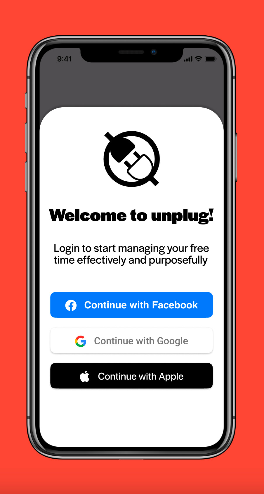
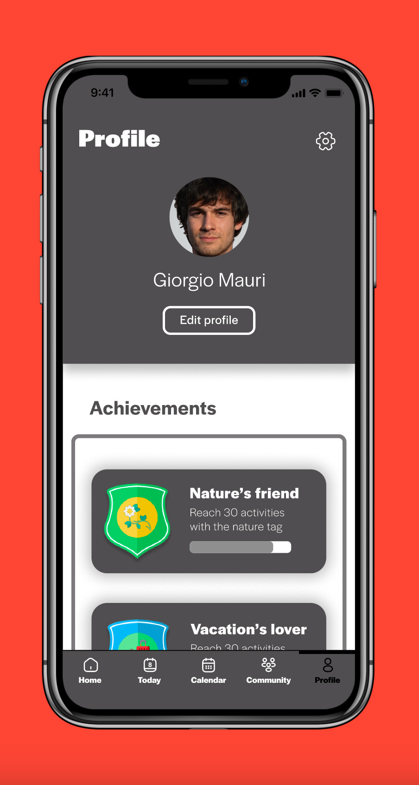
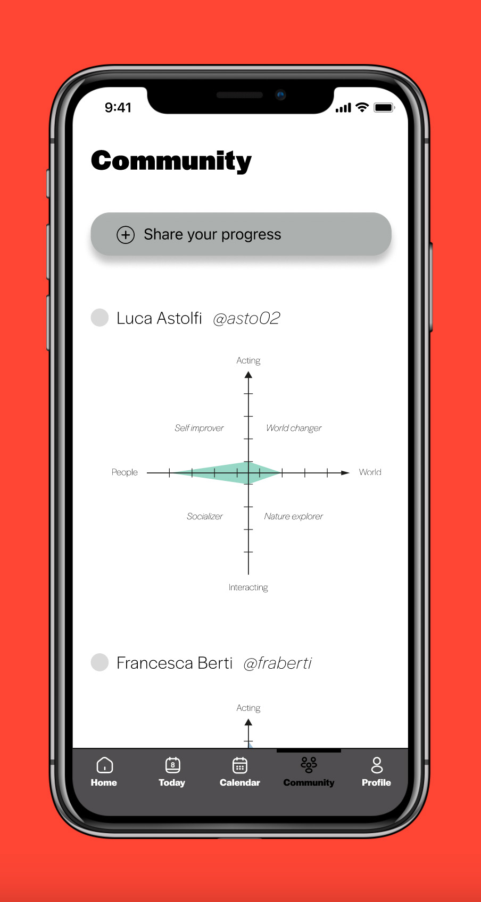
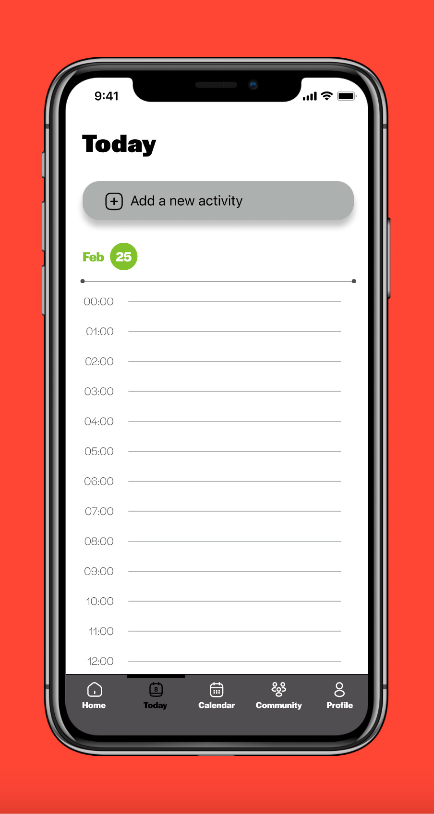
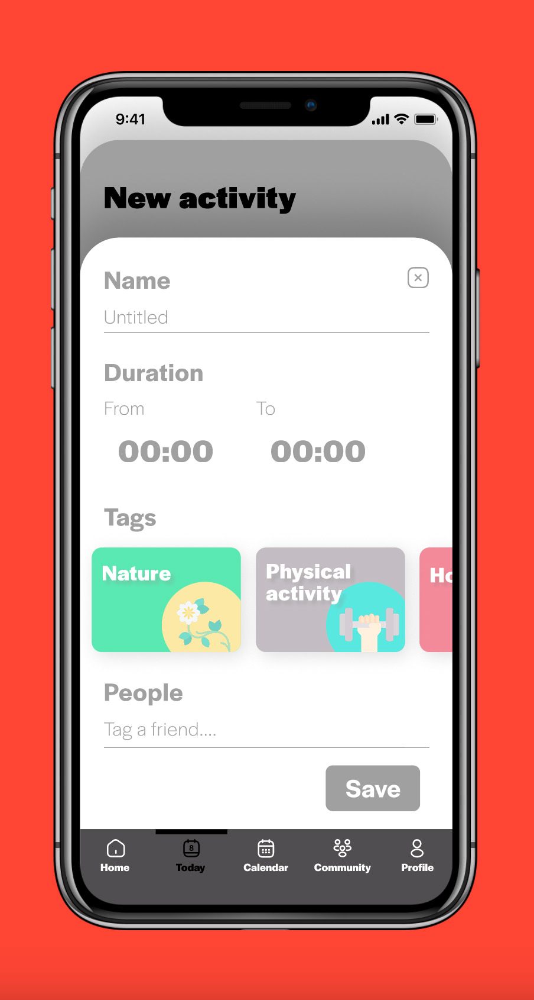
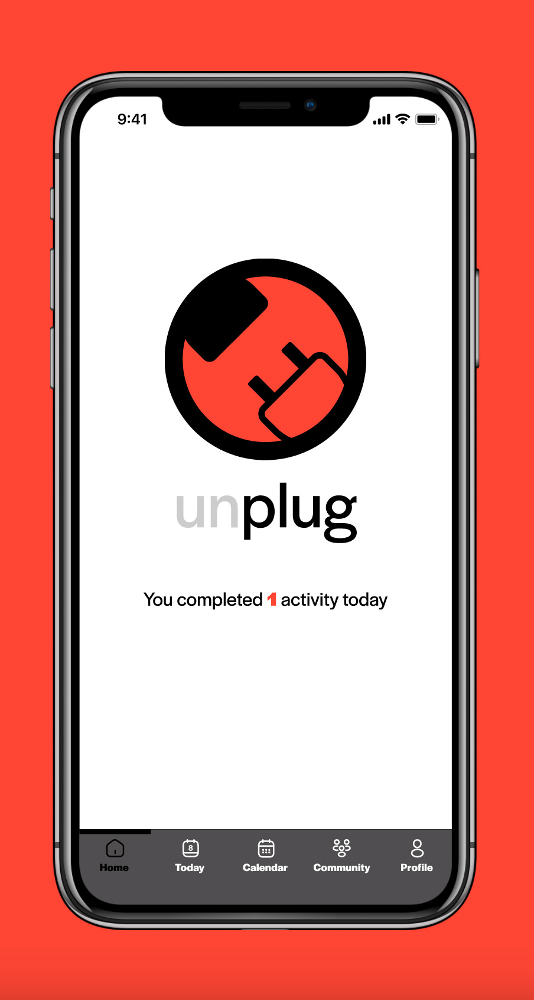

ARERA Smart
UX and UI design
System design
System design
2024
Brief
Project an application with the objective to resolve a problem or to
help people in their everyday life. Build the brand behind the app,
and the UX and UI design.

Concept
Unplug is the app that will allow you to keep track of how much and
how well you are able to literally "unplug" which means spending time
on yourself and your personal growth. In an over-productive world, we
are losing focus on our mental and physical health, and we often don't
find time to take care of ourselves. Unplug was created to keep track
of your non-work activities, and the logo itself on the homepage marks
how much you have "unplugged" day by day: in fact, the logo is
variable, and with each activity you add you will see the plug slowly
unplugged and the lettering defining itself.



Unplug
Within the application you can enter each of your activities,
categorizing them with tags that help you understand what part of
yourself you are improving and create your own user profile to share
with the community. The Unplug community is not about sharing photos,
but about showing our friends how we are improving ourselves through
graphs built according to our activities. In addition, in the user
profile we can see unlocked achievements, which are useful to motivate
users to continue using Unplug and keep track of their progress. In
the calendar section, we can see the long-term progress, schematized
by circles that recall the colors of the logo on the home screen and
help us understand right away how many recreational activities we have
done that specific day.



Team
Jacopo Bartoli / Chiara Compagnoni / Clara Di Bella / Alessia Nicolini / Agostino Sanna